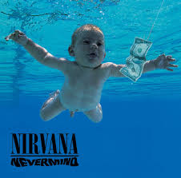

Álbuns
- 

Nirvana foi uma influente banda de rock americana formada em Aberdeen, Washington, em 1987, por Kurt Cobain e Krist Novoselic. A banda ganhou notoriedade com o lançamento de "Smells Like Teen Spirit" em seu segundo álbum, "Nevermind", que se tornou um marco do grunge e do rock alternativo.
A formação clássica da banda, que incluiu o baterista Dave Grohl, solidificou o status do Nirvana como uma das bandas mais importantes dos anos 90. Suas letras profundas e o som distintivo ajudaram a redefinir o rock e a criar um novo espaço para bandas alternativas na cena musical.
Nirvana lançou três álbuns de estúdio durante sua carreira: "Bleach" (1989), "Nevermind" (1991) e "In Utero" (1993). Cada um deles trouxe uma nova dimensão ao som da banda, desde o grunge cru e poderoso de "Bleach" até a experimentação mais sombria de "In Utero".
A banda teve um impacto duradouro na música e na cultura pop, inspirando inúmeras bandas e artistas. A trágica morte de Kurt Cobain em 1994 marcou o fim da banda, mas o legado do Nirvana continua vivo e relevante até hoje.


Rua do Rock nº 123, Centro - Seattle - WA